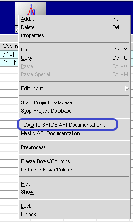
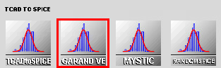
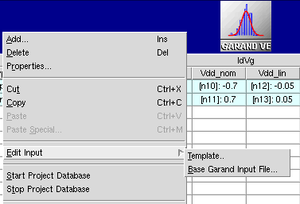

main menu
| module menu
| << previous section
| next section >>
main menu
| module menu
| << previous section
| next section >>
TCAD to SPICE
5. Garand VE
5.1 Setting Up a Simulation Using Garand VE
5.2 Variability Analysis
Objectives
- To demonstrate how to perform variability analysis using Garand VE.
5.1 Setting Up a Simulation Using Garand VE
Garand VE can simulate Id–Vg, Id–Vd, and C–V curves. Simulations are performed at fixed biases for a range specified by users. In addition, Garand VE can perform VT search simulations, where a series of simulations is run according to an internal algorithm until a threshold voltage that satisfies a user-defined current criterion is found. In this case, you can specify only the initial bias for the search, together with the current criterion and the degree of accuracy of the search.
It is important to point out that the interface between Garand VE and Sentaurus Workbench is represented by gpythonsh, which acts as a controller for both the Garand VE simulation status and the flow of data between Garand VE and Sentaurus Workbench.
In addition, gpythonsh harvests and stores the simulation data in a database (see Section 2. TCAD to SPICE Database).
This section demonstrates how to set up Garand VE inside a Sentaurus Workbench project and how to control, through gpythonsh, the simulation types and the flow of data to and from the database.
See the API documentation for a comprehensive guide to controlling Garand VE through the gpythonsh wrapper.
To access the API documentation, right-click a TCAD to SPICE tool icon and choose TCAD to SPICE API Documentation as illustrated on Figure 1.

Figure 1. Accessing TCAD to SPICE API documentation.
Prerequisites- You have already completed Section 2. TCAD to SPICE Database, which explains the SWB Python database and how it can be used in the gpythonsh scripting environment.
- gpythonsh syntax is based on Python version 3.6.
This section covers the following topics:
- Section 5.1.1 Setting Up Garand VE in Sentaurus Workbench
- Section 5.1.2 Base Garand VE Input File
- Section 5.1.3 Python Template File for Garand VE
- Section 5.1.4 Controlling the Simulation Type
- Section 5.1.5 Saving Data to and Retrieving Data From the Database
5.1.1 Setting Up Garand VE in Sentaurus Workbench
Garand VE can be added to a Sentaurus Workbench project like other tools as follows:
- From Sentaurus Workbench, choose Tool > Add.
The Add Tool dialog box opens. - On the Tool Properties tab, select Garand VE from the Name list or click the Tools button to select the tool from the Select DB Tool dialog box as shown in Figure 2.

Figure 2. Garand VE tool shown in Select DB Tool dialog box.
Sentaurus Workbench adds the Garand VE tool at the current project location and automatically provides two input files:
- Template file is the Python command file (recalling that gpythonsh manages TCAD to SPICE tools).
- Base Garand VE Input File contains the basic inputs for running Garand VE. Note that gpythonsh will process this file and create runnable copies, which include all the modifications dictated by users through the gpythonsh template file.

Figure 3. Accessing Garand VE input files from the Edit Input command.
Sentaurus Workbench preprocesses both files by using standard Sentaurus Workbench preprocessor syntax. These are discussed in detail in the next sections.
5.1.2 Base Garand VE Input File
The Base Garand VE Input File should contain the input commands that are common to the Garand VE tools inside the same Sentaurus Workbench project. Generally, the Base Garand VE Input File contains basic models, material properties, the path to input structure files, output types, solver information, and other basic Garand VE simulation attributes.
There must be only one Base Garand VE Input File for each Sentaurus Workbench project.
If necessary, standard Sentaurus Workbench variable substitution can be used in the Base Garand VE Input File to produce a preprocessed input file that will be used by gpythonsh.
gpythonsh uses the Base Garand VE Input File as a generalized parent file and creates a specialized runnable child file for each Garand VE tool instance inside the Sentaurus Workbench project. In each of these runnable files, some of the input commands are overwritten or new input lines are added.
5.1.2.1 Example
In Figure 4, the Garand VE tool instances in the Sentaurus Workbench project are specialized in performing Id–Vg, Id–Vd, and VT simulations. All tool instances share the same Base Garand VE Input File, but have different Python template files.
The main idea is to declare, in the Base Garand VE Input File, all the parameters that are constant across the project (such as temperature and Gummel accuracy). In the Base Garand VE Input File, you can also specify placeholders for those parameters that will change across the project (such as gate bias). There is no special syntax for these placeholders. However, the used keyword must exist. gpythonsh will modify the value of these placeholders according to the instructions specified in the template file (see Section 5.1.3 Python Template File for Garand VE).
For a list of all Garand VE input commands, refer to the Garand User Guide.
{kind=link}
Figure 4. Example of Garand VE tool instances in a Sentaurus Workbench project. All Garand VE tool instances share the same generalized Base Garand VE Input File. Each tool instance has a different template file, where gpythonsh instructions are specified to drive the specific operation of that tool instance. For each Garand VE tool instance, gpythonsh will create a child copy of the generalized input file and modify it to perform the user-defined operation (in this example, Id–Vg, Id–Vd, or VT simulation). (Click image for full-size view.)
Here is the Base Garand VE Input File used in the example project:
# ------------------------------- SIMULATION TYPE ------------------------------
SIMULATION solve=on # Perform solution
SIMULATION sim_type=IdVg # [IdVg, IdVd, target]
SIMULATION accept_unconverged=on # if "off" all unconverged datapoints will
# appear as '0' in the database
#if "@Type@" == "pMOS"
#define __BAND__ valence
SIMULATION n_or_p=p # p-type simulation
BIAS drain=-0.05 # Drain Bias [V]
BIAS gate=0.0 # Gate Bias [V]
BIAS substrate=0.0 # Substrate Bias [V]
BIAS delta=-0.07 # Voltage step for I-V curve [V]
BIAS ivpoints=11 # Number of points in the I-V curve
#else if "@Type@" == "nMOS"
#define __BAND__ conduction
SIMULATION n_or_p=n # n-type simulation
BIAS drain=0.05 # Drain Bias [V]
BIAS gate=0.0 # Gate Bias [V]
BIAS substrate=0.0 # Substrate Bias [V]
BIAS delta=0.07 # Voltage step for I-V curve [V]
BIAS ivpoints=11 # Number of points in the I-V curve
#endif
# ------------------------------- SIMULATION MODEL -----------------------------
MODEL density_gradient=on # Density gradient solution (majority carriers)
MODEL minority_dg=on # Density gradient solution (minority carriers)
MODEL dg_doping_limit=5e19 # DG application density threshold [/cm3]
MODEL fermi_dirac status=off # Fermi-Dirac statistics
SIMULATION gummel_acc=1e-4 # Gummel loop accuracy
SIMULATION bounded_fermi = on
SIMULATION import_bands = off
SIMULATION T = 300 # simulation temperature
#------------------------------ SIMULATION DOMAIN ------------------------------
STRUCTURE IMPORT filename=@tdr@ # Device structure file
STRUCTURE gate_length=@<lgate*1e3>@ # Nominal gate length [nm]
#------------------------------- MESH DEFINITION -------------------------------
MESH IMPORT # import the whole mesh in the structure
#------------------------------ CONTACT DEFINITION -----------------------------
# Gate contact bounding box
CONTACT metal_gate import=@gate_con@ name='@gate_con@'
# Source contact bounding box
CONTACT source import=@source_con@ name='@source_con@'
# Drain contact bounding box
CONTACT drain import=@drain_con@ name='@drain_con@'
# Substrate contact bounding box
CONTACT substrate import=@bulk_con@ name='@bulk_con@'
CONTACT work_function=@workfn@ # set the metal workfunction
CONTACT confined_boundary=off # Do not apply DG at contact interfaces
# ---------------------------- MATERIAL REDEFINITION ---------------------------
MATERIAL Silicon.__BAND__.dgy 0.3 # Density gradient mass x [me]
MATERIAL SiliconGermanium.__BAND__.dgy 0.3 # Density gradient mass x [me]
MATERIAL Oxide.__BAND__.dgy 0.1 # Density gradient mass x [me]
MATERIAL Silicon.__BAND__.dgx 0.3 # Density gradient mass x [me]
MATERIAL SiliconGermanium.__BAND__.dgx 0.3 # Density gradient mass x [me]
MATERIAL Oxide.__BAND__.dgx 0.1 # Density gradient mass x [me]
MATERIAL Silicon.__BAND__.dgz 5.0 # Density gradient mass x [me]
MATERIAL SiliconGermanium.__BAND__.dgz 5.0 # Density gradient mass x [me]
MATERIAL Oxide.__BAND__.dgz 5.0 # Density gradient mass x [me]
MATERIAL Nitride.permittivity 7.5 # Setup permittivity of Nitride material
MATERIAL Oxide.permittivity 3.9 # Setup permittivity of Oxide material
MATERIAL Silicon.permittivity 11.7 # Setup permittivity of Silicon material
MATERIAL LowK.permittivity 2.5 # Setup permittivity of LowK material
# ---------------------------- MATERIAL STRESS ---------------------------------
STRAIN import=on # enable strain import
# ---------------------------------- MOBILITY ----------------------------------
MATERIAL Silicon.__BAND__.mobility.bulk masetti # bulk mobility model
MATERIAL Silicon.__BAND__.mobility.eprp yamaguchi # low-field mobility model
MATERIAL Silicon.__BAND__.mobility.elat caughey # high-field mobility model
# ------------------------------ SIMULATION OUTPUT -----------------------------
OUTPUT directory=results # Directory to which output files are written
OUTPUT experiment=n@node@ # Output file header if running I-V curve
5.1.3 Python Template File for Garand VE
The template file contains the user-defined instructions for gpythonsh, which controls the execution of each Garand VE tool instance.
Each Garand VE tool instance has a different template file.
If necessary, Sentaurus Workbench variable substitution can be used in the template file.
Each template file reads the Base Garand VE Input File and produces a specialized copy of it to perform the simulation required in each tool instance.
gpythonsh defines the Garand VE simulator as an object (garand), which has attributes that allow you to set up inputs of the object. In addition, methods allow you to drive the object to perform specialized functions. The most important attributes and methods used in this example are presented in Table 1 and Table 2. For an extended list, see the API documentation.
The typical syntax for attributes in Python template files is:
garand.attribute_name = attribute_value
The syntax for methods is similar to a function call. Therefore, the typical syntax is:
garand.method_name(input_parameters)
| Attribute | Description | Default value |
|---|---|---|
| wait | Waits for current simulation to finish before continuing. | False |
| clear_data | Clears old data from the database on first Garand VE call. | False |
| inputfile | Links the Garand VE input file to the user-specified path. | – |
| Method | Description | Inputs |
|---|---|---|
| Wait() | Garand VE waits at this line of the script until all currently running Garand VE simulations are completed. Note the uppercase letter with respect to the attribute, which has a lowercase letter. | – |
| simulate() | Executes Garand VE with the specified conditions. | Any Garand VE commands that users want to add to the Base Garand VE Input File upon execution. |
5.1.3.1 Example
The template file has three main sections:
- Set up the general environment using the garand object attributes
- Set up input values such as the simulation type, contact biases, and parallel execution options using the garand object attributes
- Run the Garand VE simulator with specific functionalities using the garand object methods
#####################################################################
### The garand object is injected into the environment by ###
### gpythonsh. A small amount of setup is required before usage. ###
#####################################################################
# Set full path to Garand VE input file
garand.inputfile = open(os.path.join("@pwd@","@nodedir@","pp@node@_eng.garinp"))
garand.clear_data= False
garand.wait = True
#####################################################################
### Because of the simple structure of the Garand VE input file, ###
### you can directly alter the options of the Garand VE ###
### simulation. The attribute inputfile is set up like a Python ###
### dictionary with key-value pairs; therefore, access or ###
### substitution to all Garand VE inputs inside the file is ###
### very easy. ###
#####################################################################
garand.inputfile["STRUCTURE IMPORT filename"] = "@pwd@/@tdr@"
garand.inputfile["BIAS delta"] = @<Vdd_nom/8>@
garand.inputfile["BIAS ivpoints"]=9
#####################################################################
### You can now execute Garand VE with the bias settings in the ###
### input file already attached to this tool instance ###
#####################################################################
garand.simulate({"bias drain": @Vdd_lin@}) # Run Garand VE full IdVg at low Vd
garand.simulate({"bias drain": @Vdd_nom@}) # Run Garand VE full IdVg at high Vd
This example of the template file performs an Id–Vg simulation. The aim is to properly set up the input file (a range of gate biases) using the Garand VE object (garand named in the Python code) and then to run the Garand VE simulator when Vd = Vdd_lin, where Vdd_lin is the parameter defined in Sentaurus Workbench.
The first line sets up the full path to the Garand VE child input files. gpythonsh will not delete the old data in the database because garand.clear_data=False, and Garand VE will wait for the full simulation to finish because garand.wait=True.
Next, the path to the TDR file is defined and applied to the Garand VE input file using the garand.inputfile attribute. Note that garand.inputfile is set up similarly to a Python dictionary with keyword ("STRUCTURE IMPORT filename") – value ("@pwd@/@tdr@") pairs. The path to the TDR file is set using standard Sentaurus Workbench variable substitution. It becomes very easy to access and modify commands inside the file.
Finally, you call the garand methods needed to perform the required functionality. In this example, you simply specify the drain bias input and pass it to the garand.simulate() method.
5.1.4 Controlling the Simulation Type
Garand VE supports running three types of simulation: Id–Vg, Id–Vd, and VT. Because of the easy access and manipulation capability of the Garand VE input file, the gpythonsh wrapper allows you to control the simulation type in a straightforward way. Section 5.1.3 Python Template File for Garand VE shows how to run a simple Id–Vg simulation. The example script in Section 5.1.3.1 Example can be modified to run an Id–Vd simulation, as shown here:
#####################################################################
### The garand object is injected into the environment by ###
### gpythonsh. A small amount of setup is required before usage. ###
#####################################################################
# Set full path to Garand VE input file
garand.inputfile = open(os.path.join("@pwd@","@nodedir@","pp@node@_eng.garinp"))
garand.clear_data= False
garand.wait = True
garand.inputfile["STRUCTURE IMPORT filename"] = "@pwd@/@tdr@"
garand.inputfile["BIAS delta"] = @<Vdd_nom/8>@
garand.inputfile["BIAS ivpoints"]=9
garand.inputfile["SIMULATION sim_type"] = "IdVd"
#####################################################################
### You can now execute Garand VE with the bias settings in the ###
### input file already attached to this tool instance ###
#####################################################################
#if "@Type@" == "pMOS"
gate_bias_list=[@<Vdd_nom+0.3>@, @<Vdd_nom+0.15>@, @Vdd_nom@]
#else
gate_bias_list=[@<Vdd_nom-0.3>@, @<Vdd_nom-0.15>@, @Vdd_nom@]
#endif
for vg in gate_bias_list:
# Execute Garand VE with a different Vg every time
garand.simulate({"bias gate": vg})
garand.Wait()
Again, you are simply exploiting the keyword–value pair structure of the Python dictionary garand.inputfile attribute, assigning the value IdVd to the keyword SIMULATION sim_type. The Garand VE simulation is then launched specifying a different gate bias value at each iteration.
Similarly, to perform a VT search simulation by using the tool instance VT_simulation, the Python template will be modified as:
#####################################################################
### The garand object is injected into the environment by ###
### gpythonsh. A small amount of setup is required before usage. ###
#####################################################################
# Set full path to Garand VE input file
garand.inputfile = open(os.path.join("@pwd@","@nodedir@","pp@node@_eng.garinp"))
garand.clear_data= False
garand.wait = True
VT_init = 0.0 # Initial Vg value for the VT search algorithm
#####################################################################
### Because of the simple structure of the Garand VE input file, ###
### you can directly alter the options of the Garand VE ###
### simulation. The attribute inputfile is set up like a Python ###
### dictionary with key-value pairs; therefore, access or ###
### substitution to all Garand VE inputs inside the file is ###
### very easy. ###
#####################################################################
garand.inputfile["STRUCTURE IMPORT filename"] = "@pwd@/@tdr@"
garand.inputfile["SIMULATION sim_type "] = "target"
garand.inputfile["SIMULATION target_current"] = @VT_current_criterion@
garand.inputfile["SIMULATION target_acc"] = 1e-4
garand.inputfile["SIMULATION target_iter_max"] = 25
garand.inputfile["SIMULATION target_init_slope"] = 70
#####################################################################
### You can now execute Garand VE with the bias settings in the ###
### input file already attached to this tool instance ###
#####################################################################
# Run Garand VE VT search, at low VD, starting VT search from Vg=0.0
garand.simulate({"BIAS drain": @Vdd_lin@, "BIAS gate": VT_init})
5.1.5 Saving Data to and Retrieving Data From the Database
gpythonsh manages the flow of information to and from different tools by using an underlying database (see Section 2. TCAD to SPICE Database). All simulation results are stored in a database location named after the Sentaurus Workbench @node@. This allows an easy link between Sentaurus Workbench jobs and the database location, and an easy convention for data to be stored to, and retrieved from, the database.
5.1.5.1 Saving Data to the Database
In the specific case of Garand VE, the tool has a direct interface with the database and it automatically saves the simulation results to the database using a naming location based on the Sentaurus Workbench @node@ value. In the case of an Id–Vg (or Id–Vd) simulation, Garand VE identifies the gate (or drain) bias as the independent variable (ivar) and the drain current as the dependent variable (dvar), and stores these values in the database.
There is, therefore, no burden on the user side. After the garand.simulate() method is invoked, data is stored automatically. Table 3 lists all the metadata that Garand VE saves to the database.
| Metadata | Description |
|---|---|
| Release | The current Garand VE release |
| SimulationType | Id–Vg, Id–Vd, or target (that is, VT search) |
| ivar | The independent variable (for example, Vg) |
| dvar | The dependent variable (for example, Id) |
| DeviceType | nMOS or pMOS |
| CurrentUnits | Units for the electron current (for example, [A]) |
| CapacitanceUnits | Units for the capacitance (for example, [F]) |
| LengthUnits | Units for the geometrical features (for example, [nm]) |
| L | Gate length |
| W | Gate width |
| Temperature | Simulation temperature |
| AreaFactor | Same scaling factor as in Sentaurus Device |
| drainLabel | Name of the drain contact |
| sourceLabel | Name of the source contact |
| gateLabel | Name of the gate contact |
| substrateLabel | Name of the substrate contact |
| RDC | Drain contact resistance |
| RSC | Source contact resistance |
5.1.5.2 Retrieving Data From the Database
Given the previously mentioned naming convention for the database storage locations, retrieving data is straightforward. Assume you have a previous Garand VE tool instance that performed a simple Id–Vg simulation. You now create, in Sentaurus Workbench, a tool instance to retrieve the data that Garand VE saved to the database.
{kind=link}
Figure 5. Sentaurus Workbench project showing the Retrieve_DB_data_idvg tool instance. (Click image for full-size view.)
The data to be retrieved from the database is identified by the Retrieve_DB_data_idvg script with the following:
- The dataset in the database
- The independent variable (ivar)
- The dependent variable (dvar)
The specific code is given by the following line:
project_data_ld = Data.from_db(project="@node|IdVg@", ivar="v@gate_con@", \
dvar="i@drain_con@",**{drain_bias_filter:@Vdd_lin@})[0]
project_data_hd = Data.from_db(project="@node|IdVg@", ivar="v@gate_con@", \
dvar="i@drain_con@",**{drain_bias_filter:@Vdd_nom@})[0]
For details about the syntax and options for the available gpythonsh methods, see the API documentation. It is worth mentioning that the Data.from_db method returns a data container, which can be exported in several formats (including CSV and PLT).
After data is retrieved from the database into the data container project_data, it is then grouped in a way to be written into a single PLT file by using the Data.concat_data() method. The method write_plt() finally exports the data into a PLT file, which can be visualized by the next Sentaurus Visual tool instance. Moreover, note the Vt(ic=ivt) method applied to the low-drain data to extract the threshold voltage (VT_extr) from the Id–Vg curve: this value can be compared with the one obtained by the VT_simulation tool instance.
project_data_ld.write_plt(os.path.join(output_dir_root,\
f"n@node@_idvg_stage_ld_0.plt"))
VT_extr = project_data_ld.Vt(ic=ivt) # Threshold voltage extracted from IdVg
print(f"DOE: VT_extr {VT_extr:.5}")
project_data_hd.write_plt(os.path.join(output_dir_root,\
f"n@node@_idvg_stage_hd_0.plt"))
It is worth noting that, in the case of a VT search simulation, the value of the found threshold voltage is pushed as a metadata (TargetVoltage) together with an auxiliary metadata (TargetFound) that will confirm whether the simulation has converged to a threshold voltage value within the user-specified level of accuracy. The tool instance to retrieve the database data will, therefore, be modified as:
data = Data.from_db(project="@node|VT_simulation@", ivar="v@gate_con@",
dvar="i@drain_con@")[0]
if data.metadata["TargetFound"] == "True":
VT = data.metadata["TargetVoltage"]
else:
VT = np.nan
print(f"DOE: VT_sim {VT:.5}")
In addition, in Sentaurus Workbench, you can export the database content associated with a simulation node into a CSV file. This is achieved directly by using the Node Explorer, through the graphical user interface of Sentaurus Workbench (choose Node > Node Explorer).
{kind=link}
Figure 6. Node Explorer provides the option to export the SWB Python database content to a CSV file. (Click image for full-size view.)
The CSV file can then be postprocessed by any other script or analyzed in a spreadsheet application as shown in Figure 7.
{kind=link}
Figure 7. Example of SWB Python database data viewed in a spreadsheet application. (Click image for full-size view.)
5.2 Variability Analysis
This section presents an overview of the different sources of statistical variability and the commands used to enable them and to control how they are applied. The section also covers the commands that should be used in the Garand VE input file.
The example provided makes extensive use of the methodology previously discussed to run Garand VE in Sentaurus Workbench. The example demonstrates how to run Garand VE simulations with statistical variability, to switch on and off the different variability sources, and to modify some of the model parameters.
This section covers the following topics:
- Section 5.2.1 Commands for Statistical Variability
- Section 5.2.2 Sentaurus Workbench Project
- Section 5.2.3 Base Garand VE Input File
- Section 5.2.4 Python Template File
- Section 5.2.5 Retrieving and Visualizing Data From the Database
5.2.1 Commands for Statistical Variability
Garand VE can evaluate the impact of several statistical variability sources on device characteristics. These sources can be enabled and defined by using the Base Garand VE Input File or injected into the final Garand VE input file by the Python template file. The corresponding parameters should be provided. These are set using the variability command:
variability <variability_source> <parameter>=<value>
5.2.1.1 Random Discrete Dopants
In the fabrication of semiconductor devices, dopants such as phosphorus (P), arsenic (As), and boron (B) are introduced by ion implantation and are activated through a high-temperature annealing process, resulting in inherently random discrete dopant (RDD) distributions. Random dopants are introduced in Garand VE through a rejection technique based on the continuous doping profile coming from a standard TCAD process simulation.
To represent the "average" TCAD doping profile statistically, each Si lattice site within the device is visited and the Si atom is replaced by a dopant, based on a calculated probability that depends on the nominal continuous doping concentration at that point. Consequently, the number of discrete dopants follows a Poisson distribution.
As the placement of discrete dopants depends only on the nominal doping profile, no additional parameters are required when enabling the simulation of RDD. You can specify whether all the dopants are discrete, or solely acceptors or donors. The positions of randomly generated discrete dopants will be written as particle data to the output TDR file.
The status parameter controls whether RDD is included in a specific simulation by using the variability command as:
variability RDD status=on
The dopants parameter controls whether all dopants should be discrete, or solely acceptors or donors. The possible options are shown here:
variability RDD dopants=all variability RDD dopants=acceptors variability RDD dopants=donors
It is also possible to specify individual dopant species fields for RDD generation. To enable this function, you define the parameter separate_species in the Garand VE input file:
variability RDD separate_species=on
Note that if it is enabled, each species will be considered independently. Therefore, the generated discrete dopant distribution will change.
By default, all dopant species are considered to be discrete dopants. To specify specific dopant species fields to use for RDD, use the commands:
variability RDD acceptor_fields = <acceptor fields> variability RDD donor_fields = <donor fields>
where <acceptor fields> and <donor fields> are comma-separated lists of acceptor and donor dopant fields, respectively. For example:
variability RDD acceptor_fields = BoronActiveConcentration variability RDD donor_fields = PhosphorusActiveConcentration
This example flags the BoronActiveConcentration and PhosphorusActiveConcentration species fields as being discrete, where the continuous doping profile associated with each species will be replaced by discrete dopants. Any doping fields that were imported and not flagged as discrete (for example, ArsenicActiveConcentration) will be included as a continuous doping profile as it was originally imported from the process simulation.
By default, discrete doping will be generated everywhere in the simulation domain except at contact regions. The RDD region can be restricted to a specific part of the device structure by providing a bounding box given by the parameters xmin, xmax, ymin, ymax, zmin, and zmax. It is not necessary to specify all of these parameters because, by default, this bounding box will fill the entire simulation domain, with the default values for the min and max parameters being the minimum or maximum extent of the simulation domain in the respective directions.
For large device structures, reducing the size of the RDD region is advisable as initializing a random dopant distribution can take time if the simulation domain is large. This is done in the later example to reduce the depth into the substrate to which discrete dopants are generated, using the command:
variability RDD xmax=100.0
which restricts the RDD generation to the region of the device structure where x < 100 nm.
5.2.1.2 Line Edge Roughness
Line edge roughness (LER) is introduced in Garand VE through randomly generated lines, which are used to modify the device structure.
These random lines are generated using a Fourier synthesis technique and are characterized by the following parameters:
- The root mean square (RMS) amplitude of the line (Δ) determines the magnitude of the roughness. When LER is quantified, the value quoted is usually 3Δ; however, Garand VE expects the RMS value, Δ, to be provided. This can be considered analogous to the standard deviation, σ, of a normal distribution.
- The longitudinal correlation length (Λ) controls the rate at which the random lines vary along their length, with a small value resulting in fast variations and a larger value leading to more long-scale roughness.
To add LER to an arbitrary structure, the variability type LER is used. All the options for the particular specification of LER must be supplied on the same input file line. This is because LER can be applied in multiple directions simultaneously. For example:
variability LER <option1>=<value1> <option2>=<value2> ...
The status parameter controls whether LER is included in a specific simulation by using the variability command as:
variability LER status=on
The LER is characterized by two random lines. In the example here, this is used to apply gate edge roughness. The position of the midpoint of the LER region defines a plane, normal to which the structure will be modulated to follow the roughness. This plane is defined by a direction (x, y, or z) and a position.
To apply gate edge roughness, these should be the channel direction, and the point in the middle of the gate in that direction. If, for example, you wanted to apply roughness to the side walls of a FinFET, you would specify the point in the center of the fin in the width direction.
The direction along this plane in which the random lines should propagate is specified by using the dir parameter. In the example of gate edge roughness, this is the width direction, which is the y-direction in the example. For the example of fin edge roughness in a FinFET, this would be the channel direction. Finally, the RMS amplitude (rms) and the correlation length (corr) are required.
In the example Base Garand VE Input File, LER is specified with the command:
variability LER status=on z=0.0 dir=y rms=0.5 corr=25.0
For details about LER, refer to the Garand User Guide, along with other options that are available.
5.2.1.3 Metal Gate Granularity
The polycrystalline nature of the metal gate is another potential source of statistical variability. Metal grains with different crystallographic orientations have different workfunctions at the metal–oxide interface, resulting in statistical variation of the local threshold voltage in the gate region.
Metal gate granularity (MGG) is introduced in Garand VE through the generation of random 3D grain patterns based on a 3D Voronoï tessellation, where the specified average grain size determines the average number of grains in the gate volume. Each grain is assigned a workfunction randomly from the list given by users. In the list, the number of grains with different workfunctions and the probability that the corresponding grain exists in the gate region are provided.
The status parameter controls whether MGG is included in a specific simulation by using the variability command as:
variability MGG status=on
The number of grains having different crystallographic orientations in the gate metal depends on how many grains you define using an add_grain statement.
For each grain orientation, you must provide two numbers: the first is an offset from the specified nominal workfunction, which will define the workfunction used within the grain, and the second is the probability (between 0.0 and 1.0) for that crystallographic orientation to occur. For example:
variability MGG add_grain wf_delta=-0.12 probability=0.4 variability MGG add_grain wf_delta=+0.08 probability=0.6
You must ensure that the sum of the probabilities for the defined grains equals 1.0. Otherwise, an error message is displayed, and the simulation stops.
You can also specify the average diameter of the grains (in nm) using the diameter parameter. For example:
variability MGG diameter=7.0
This diameter is one of the parameters that can be modified in the example Sentaurus Workbench project.
5.2.1.4 Polysilicon Gate Granularity
The granularity of polysilicon gates can be an important source of statistical variability due to surface potential pinning along the grain boundaries. As with metal gate granularity, polysilicon gate granularity (PGG) is introduced in Garand VE through the generation of random 3D grain patterns based on a 3D Voronoï tessellation, where the specified average grain size determines the average number of grains in the gate volume. Arbitrary surface potential pinning can be introduced at the grain boundaries.
The status parameter controls whether PGG is included in a specific simulation by using the variability command as:
variability PGG status=on
The other options you can specify are:
- The average diameter of the grains (in nm) using the diameter parameter. For example:
variability PGG diameter=30
- The trap level within the energy gap at which the Fermi level should be pinned along the
polysilicon grain boundaries. This is specified as eV below the conduction band edge using the
pinning parameter. For example:
variability PGG pinning=0.2
Polysilicon granularity is not included in the example here, as the device used has a metal gate.
5.2.2 Sentaurus Workbench Project
Taking the basic Id–Vg simulation from the Sentaurus Workbench project of Section 5.1 Setting Up a Simulation Using Garand VE, Sentaurus Workbench parameters related to the statistical variability have been added.
These parameters will be used in the Python template file to control the application of the different variability sources in the simulation. The function of each Sentaurus Workbench parameter is as follows:
- RDD= True | False specifies whether to enable RDD for the simulation.
- LER= True | False specifies whether to enable LER for the simulation.
- MGG= True | False specifies whether to enable MGG for the simulation.
- LER_rms= <float> specifies the RMS amplitude of the LER in nm.
- MGG_dia= <float> specifies the average diameter of the MGG grains in nm.
- TDR= True | False specifies whether to write TDR output files during the simulation.
- VT_only= True | False specifies whether to run only a threshold voltage search or a full Id–Vg.
- VT_current_criterion= <float> specifies the threshold voltage search current criterion in A.
- ensemble_size= <integer> specifies the number of microscopically different devices that form the statistical ensemble. Typically, at least 500 provide reliable statistics.
{kind=link}
Figure 8. Additional Sentaurus Workbench parameters added to the project to control the variability sources in the Garand VE command file. (Click image for full-size view.)
5.2.3 Base Garand VE Input File
The device structure used as an example here is a stacked nanosheet MOSFET, which is the same example structure used in Section 5.1 Setting Up a Simulation Using Garand VE. The structure is shown in Figure 9.
{kind=link}
Figure 9. Stacked nanosheet device structure used in this example: (left) full 3D structure and (right) a slice taken halfway across the width of the structure. (Click image for full-size view.)
The Base Garand VE Input File is the same here except for the addition of commands for the variability sources. The commands added to the Base Garand VE Input File are listed here:
# ----------------------------- VARIABILITY SOURCES ---------------------------- # RDD: Random discrete dopants VARIABILITY RDD status=off # Switch on / off RDD VARIABILITY RDD dopants=all # Apply to all species VARIABILITY RDD separate_species=on # Separate species fields VARIABILITY RDD xmax=100.0 # Range of the RDD region # LER: Line edge roughness VARIABILITY LER status=off z=0.0 dir=y rms=0.5 corr=20.0 # LER definition # MGG: Metal gate granularity VARIABILITY MGG status=off # Switch on / off MGG VARIABILITY MGG diameter=5.0 # Average grain diameter [nm] VARIABILITY MGG add_grain wf_delta=-0.12 probability=0.4 # delta[eV],probability VARIABILITY MGG add_grain wf_delta=+0.08 probability=0.6 # delta[eV],probability
These commands are sufficient to enable the variability sources as they are. However, several parameters act as placeholders that will be overridden by gpythonsh based on the template file. As already mentioned, gpythonsh can adjust the Garand VE simulation environment before executing a Garand VE simulation.
5.2.3.1 RDD Statements
The RDD statements set up the simulation to generate discrete dopants for both acceptors and donors. The "separate species" mode is activated, although in the example here, there is only one species of acceptor (boron) and one species of donor (phosphorus).
The bounding box for the RDD region has been set with a maximum extent in the x-direction (xmax=100 nm). This is sufficiently deep in the device to cover the active part of the device, but excludes most of the deep substrate, where the discreteness of the dopants would have no effect on the device characteristics. This will help to reduce the setup time required to generate RDD.
The only RDD parameter that will be set by gpythonsh is the status parameter, which activates RDD in the simulation.
5.2.3.2 LER Statement
The LER statement in the Base Garand VE Input File, in this example, is set to model gate edge roughness. LER is set up by defining a plane through the structure. Two random lines are generated, then the structure on one side of the plane is modified by one of the lines, and the other side is modified by the other line. You then specify the direction in which the roughness should propagate. This is explained in more detail in the Garand User Guide.
In the example here, the plane is defined by specifying z=0.0, which defines a plane through the middle of the gate. This is illustrated by the green plane in Figure 10. Specifying dir=y means the roughness will propagate across the width of the device.
The statistical characteristics of the generated random lines are dictated by the RMS amplitude (rms parameter) and the longitudinal correlation length (corr parameter). The rms parameter here is a placeholder that will be replaced by gpythonsh using the value of LER_rms specified in the Sentaurus Workbench project. If you wanted to, you could also set up the corr parameter to be controlled from a Sentaurus Workbench parameter.
{kind=link}
Figure 10. Green plane illustrates the plane defined at z=0.0. This is used as part of the LER specification to control where the LER is applied. The direction of roughness is then set to be the y-direction which is across the width of the structure. (Click image for full-size view.)
5.2.3.3 MGG Statements
The metal gate granularity (MGG) is set up to include two different grain orientations. One orientation is associated with a workfunction of (WF0 − 0.12) eV with a probability of 0.4. The other orientation is associated with a workfunction of (WF0 + 0.08) eV with a probability of 0.6.
Here, WF0 is the nominal gate workfunction specified in the Garand VE input file by the CONTACT work_function statement, where the value of the workfunction used is provided as a Sentaurus Workbench parameter. Note that the average workfunction, weighted by the probability of each grain orientation occurring, is equal to WF0, that is:
0.4 × (WF0 − 0.12) + 0.6 × (WF0 + 0.08) = WF0
The average diameter of the generated metal grains is specified by the diameter parameter. A value of 5 nm is given in the Base Garand VE Input File, but this is simply a placeholder that will be replaced by gpythonsh using the value of MGG_dia specified in the Sentaurus Workbench project.
5.2.4 Python Template File
The way in which Garand VE simulation jobs and the Garand VE input file can be controlled by gpythonsh is discussed in Section 5.1 Setting Up a Simulation Using Garand VE. Here, those techniques are reused to set up the variability simulations and to launch a statistical ensemble of simulations from which you can obtain an ensemble of Id–Vg curves.
The basic setup where the Garand VE input file is identified, the structure file to import is set, and some bias information is specified, are as before. Commands to control the application of statistical variability in the Garand VE input file, based on the Sentaurus Workbench variables, have been added.
Here is the Python template file used to control the variability simulations in Garand VE:
#####################################################################
### The garand object is injected into the environment by ###
### gpythonsh. A small amount of setup is required before usage. ###
#####################################################################
# Set full path to Garand VE input file
garand.inputfile = open(os.path.join("@pwd@", "@nodedir@",
"pp@node@_eng.garinp"))
garand.clear_data = True
garand.wait = True
#####################################################################
### Because of the simple structure of the Garand VE input file, ###
### you can directly alter the options of the Garand VE ###
### simulation. The attribute inputfile is set up like a Python ###
### dictionary with key-value pairs; therefore, access or ###
### substitution to all Garand VE inputs inside the file is ###
### very easy. ###
#####################################################################
garand.inputfile["STRUCTURE IMPORT filename"] = "@pwd@/@tdr@"
garand.inputfile["BIAS delta"] = @<Vdd_nom/7>@
garand.inputfile["BIAS ivpoints"]=8
if @TDR@:
garand.inputfile["OUTPUT tdr"] = "on"
#####################################################################
### You can now execute Garand VE with the bias settings in the ###
### input file already attached to this tool instance ###
#####################################################################
if @RDD@:
print("RDD is enabled.")
garand.inputfile["VARIABILITY RDD status"] = "on"
if @LER@:
print("LER is enabled.")
garand.inputfile["VARIABILITY LER status"] = "on"
garand.inputfile["VARIABILITY LER rms"] = @LER_rms@
if @MGG@:
print("MGG is enabled.")
garand.inputfile["VARIABILITY MGG status"] = "on"
garand.inputfile["VARIABILITY MGG diameter"] = @MGG_dia@
if @VT_only@:
print("VT only simulation enabled. Running VT search algorithm.")
garand.inputfile["SIMULATION sim_type "] = "target"
garand.inputfile["SIMULATION target_current"] = @VT_current_criterion@
garand.inputfile["SIMULATION target_acc"] = 1e-4
garand.inputfile["SIMULATION target_iter_max"] = 25
garand.inputfile["SIMULATION target_init_slope"] = 70
# Execute Garand VE full IdVg at low drain bias for an ensemble of devices
garand.simulate({"bias drain": @Vdd_lin@}, start=1, n=@ensemble_size@)
The Sentaurus Workbench variables TDR, RDD, LER, and MGG are substituted directly as Python Boolean variables, and therefore must be valid Boolean values, that is, either True or False.
If RDD, LER, or MGG are True, then the status of each respective variability source is set to "on", thereby enabling the corresponding source of variability in the simulation. In addition, if LER is True, then the LER rms parameter is overridden by the value of LER_rms set in the Sentaurus Workbench project. If MGG is True, then the MGG diameter parameter is overridden by the value of MGG_dia set in the Sentaurus Workbench project.
Other Sentaurus Workbench parameters could be added, and a statement included in the corresponding section of the Python template file to override different variability model parameters, such as the LER correlation length, corr.
If TDR is True, then a command is injected into the Garand VE input file that enables the output of a TDR file at the end of each bias point simulation. Within the Garand VE results directory, a subdirectory is created for each bias point. The viz folder in each bias-dependent subdirectory contains the output TDR files. One TDR file is created for each device in the statistical ensemble, with the file name containing the number of the device within the ensemble.
When running statistical variability simulations, if the TDR parameter is switched on, then the number of TDR files produced can be large, occupying a significant amount of disk space. For this reason, TDR output is typically deactivated when running statistical simulation jobs. Then, if you want to understand the behavior of a particular device within the ensemble, you can switch on the TDR parameter and run only that device to obtain a TDR file for analysis.
Figure 11 shows examples of visualization of the sources of variability from a simulation in which RDD, LER, and MGG were activated. The positions of the random discrete dopants are shown by spheres in Figure 11 (left). In Figure 11 (right), the variation between the two specified gate workfunctions for MGG are shown in the gate. The structural variations due to LER can also be seen across the width of the device.
{kind=link}
Figure 11. Examples of visualization of sources of variability in Sentaurus Visual illustrating (left) random discrete dopants and (right) two different workfunctions in the gate along with the structural variations due to LER. (Click image for full size view.)
5.2.5 Retrieving and Visualizing Data From the Database
As described in Section 2. TCAD to SPICE Database, gpythonsh manages the flow of information to and from different tools by using an underlying database. Garand VE saves simulation results directly to the database, while gpythonsh can be used to extract data from the database for further use, for example, by writing PLT files for visualization.
The Retrieve_Plot_DB_data_variability_idvg tool instance of the Sentaurus Workbench project collects all the simulated Id–Vg data from the database and produces PLT files. One .plt file is written for each device in the statistical ensemble. Therefore, in this example, where ensemble_size is set to 10 in the Sentaurus Workbench project, ten .plt files are written.
{kind=link}
Figure 12. Id–Vg curves from an ensemble of 10 simulations with RDD, LER, and MGG activated. Current is shown on (left) linear scale and (right) logarithmic scale. (Click image for full-size view.)
The Visualize_Plots_Variability_idvg tool instance executes a script in Sentaurus Visual to load all the .plt files written at the previous tool instance and to plot the Id–Vg curves. Example results are shown in Figure 12 from simulations of an ensemble of 10 NMOS devices with RDD, LER, and MGG activated as sources of variability.
In the case of the VT_only simulation, this plotting tool instance will open a .png (created by the previous tool instance) showing a quantile-quantile plot of the threshold voltage distribution (see Figure 13).
{kind=link}
Figure 13. Quantile-quantile plot for the threshold voltage from an ensemble of 10 simulations with RDD, LER, and MGG activated. (Click image for full-size view.)
main menu | module menu | << previous section | next section >>
Copyright © 2022 Synopsys, Inc. All rights reserved.